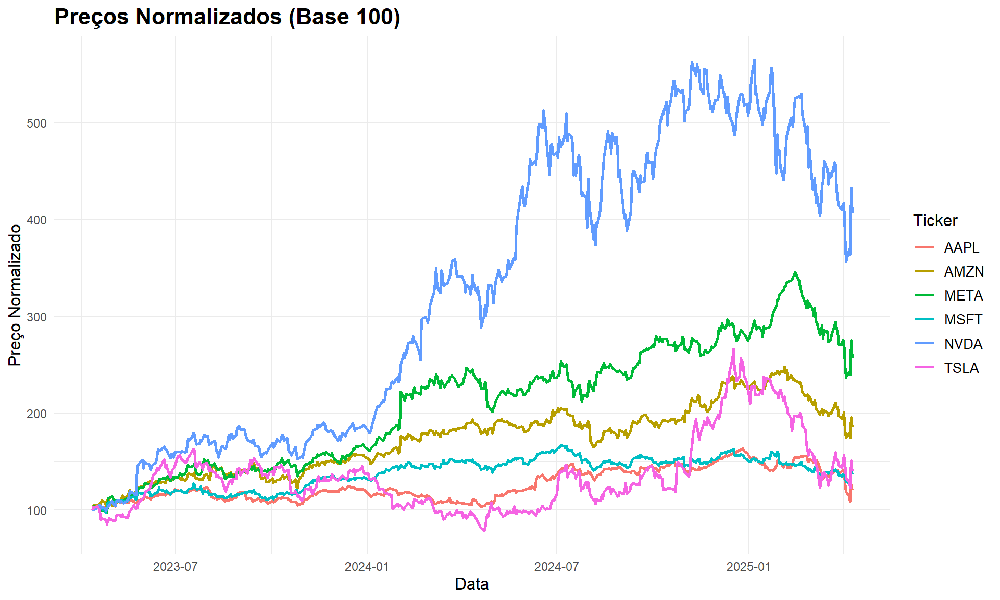
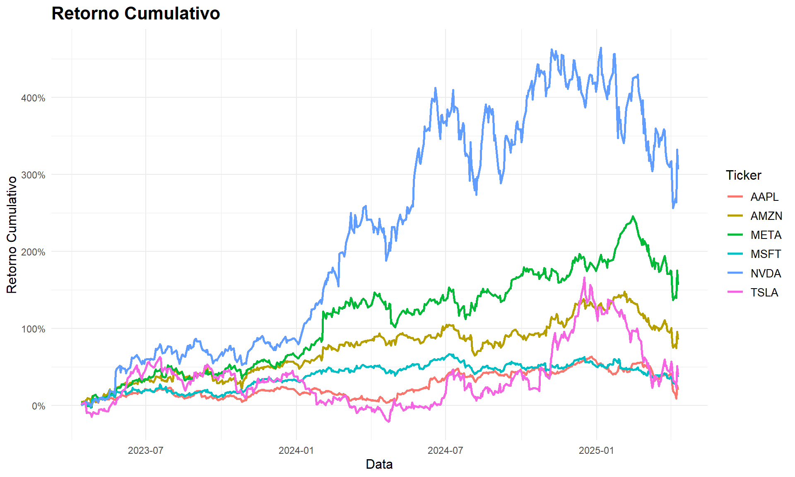
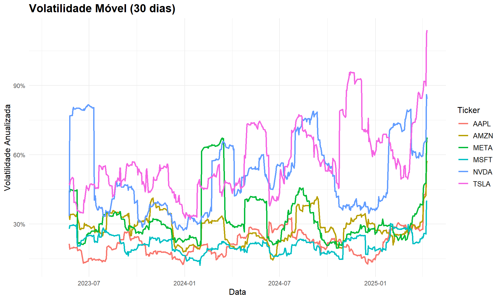

Neste projeto, analisaremos uma carteira de investimentos composta por seis empresas líderes de tecnologia. A seleção foi feita com base na relevância destas empresas no setor tecnológico, sua capitalização de mercado e potencial de crescimento.
Seleção de Empresas
Nossa carteira é composta pelos seguintes ativos:
NVDA (NVIDIA Corporation)
AAPL (Apple Inc.)
TSLA (Tesla, Inc.)
META (Meta Platforms, Inc.)
AMZN (Amazon.com, Inc.)
MSFT (Microsoft Corporation)
Justificativa da Escolha
A carteira foi estruturada com base nos seguintes critérios:
Diversificação dentro do setor tecnológico: Embora todas sejam empresas de tecnologia, cada uma atua em segmentos distintos - hardware, software, redes sociais, comércio eletrônico, veículos elétricos e inteligência artificial.
Exposição à inovação: Todas as empresas selecionadas investem fortemente em pesquisa e desenvolvimento, com foco em tecnologias emergentes como inteligência artificial, realidade aumentada, computação em nuvem e veículos autônomos.
Liderança de mercado: Todas são líderes em seus respectivos segmentos, com forte presença global e vantagens competitivas significativas.
Potencial de crescimento: Apesar de já serem empresas consolidadas, continuam apresentando perspectivas de crescimento em novos mercados e através de inovações disruptivas.
Coleta de Dados
Para este projeto, utilizaremos o pacote quantmod em R para coletar os dados históricos de preços das ações selecionadas. Vamos coletar dados dos últimos 2 anos:
Code
# Carregando as bibliotecas necessáriaslibrary(quantmod)library(ggplot2)library(dplyr)library(tidyr)library(corrplot)library(RColorBrewer)library(scales)# Definindo os tickers da nossa carteiratickers <-c("NVDA", "AAPL", "TSLA", "META", "AMZN", "MSFT")# Definindo o período de análise (últimos 2 anos)end_date <-Sys.Date()start_date <- end_date -365*2# Configurando o ambiente gráficooptions(repr.plot.width =12, repr.plot.height =8)# Função para adicionar sufixo ao ticker para Yahoo Financeadd_yahoo_suffix <-function(ticker) {return(paste0(ticker, ".US"))}# Coletando dados históricosgetSymbols(tickers, src ="yahoo", from = start_date, to = end_date)
[1] "NVDA" "AAPL" "TSLA" "META" "AMZN" "MSFT"
Code
# Exibindo as primeiras linhas dos dados da NVIDIA como exemplohead(NVDA)
Vamos organizar os dados para facilitar as análises:
Code
# Função para extrair preços de fechamento ajustadosget_adjusted_prices <-function(ticker) {return(Ad(get(ticker)))}# Criando um dataframe com os preços de fechamento ajustadosclosing_prices <-do.call(merge, lapply(tickers, get_adjusted_prices))colnames(closing_prices) <- tickers# Visualizando as primeiras linhashead(closing_prices)
# Convertendo para dataframe para facilitar algumas manipulaçõesclosing_prices_df <-as.data.frame(closing_prices)closing_prices_df$date <-as.Date(rownames(closing_prices_df))
Análise da Evolução dos Preços
Vamos visualizar a evolução dos preços de fechamento ajustados para cada ativo ao longo do tempo:
Code
# Transformando os dados para o formato longo (tidy)prices_long <- closing_prices_df %>%pivot_longer(cols =all_of(tickers), names_to ="symbol", values_to ="price")# Plotando os preços de fechamento ajustadosggplot(prices_long, aes(x = date, y = price, color = symbol)) +geom_line(linewidth =1) +labs(title ="Preços de Fechamento Ajustados",x ="Data", y ="Preço ($)",color ="Ticker") +theme_minimal() +theme(plot.title =element_text(size =16, face ="bold"),axis.title =element_text(size =12),legend.title =element_text(size =12),legend.text =element_text(size =10) ) +scale_y_continuous(labels =dollar_format())
Para facilitar a comparação entre os ativos, vamos normalizar os preços para base 100:
Code
# Calculando preços normalizadosfirst_prices <- closing_prices_df[1, tickers]normalized_prices <- closing_prices_dffor (ticker in tickers) { normalized_prices[[ticker]] <- closing_prices_df[[ticker]] / first_prices[[ticker]] *100}# Transformando para o formato longonormalized_long <- normalized_prices %>%pivot_longer(cols =all_of(tickers), names_to ="symbol", values_to ="normalized_price")# Plotando os preços normalizadosggplot(normalized_long, aes(x = date, y = normalized_price, color = symbol)) +geom_line(linewidth =1) +labs(title ="Preços Normalizados (Base 100)",x ="Data", y ="Preço Normalizado",color ="Ticker") +theme_minimal() +theme(plot.title =element_text(size =16, face ="bold"),axis.title =element_text(size =12),legend.title =element_text(size =12),legend.text =element_text(size =10) )

Análise de Retornos
Vamos calcular e visualizar os retornos diários, bem como algumas estatísticas importantes:
Code
# Calculando retornos diáriosreturns <-ROC(closing_prices, type ="discrete", n =1)returns <- returns[-1,] # Removendo a primeira linha (NA)# Exibindo estatísticas descritivasreturns_stats <-data.frame(Ticker = tickers, Mínimo =apply(returns, 2, min, na.rm =TRUE),Q1 =apply(returns, 2, function(x) quantile(x, 0.25, na.rm =TRUE)),Mediana =apply(returns, 2, median, na.rm =TRUE), Média =apply(returns, 2, mean, na.rm =TRUE),Q3 =apply(returns, 2, function(x) quantile(x, 0.75, na.rm =TRUE)), Máximo =apply(returns, 2, max, na.rm =TRUE), Volatilidade_Diária =apply(returns, 2, sd, na.rm =TRUE),Volatilidade_Anual =apply(returns, 2, sd, na.rm =TRUE) *sqrt(252))# Formatando os números para percentuaisreturns_stats[, 2:9] <-round(returns_stats[, 2:9] *100, 2)# Exibindo estatísticasknitr::kable(returns_stats, caption ="Estatísticas dos Retornos Diários (%)")
Estatísticas dos Retornos Diários (%)
Ticker
Mínimo
Q1
Mediana
Média
Q3
Máximo
Volatilidade_Diária
Volatilidade_Anual
NVDA
NVDA
-16.97
-1.60
0.30
0.30
2.21
24.37
3.32
52.74
AAPL
AAPL
-9.25
-0.68
0.12
0.04
0.83
7.26
1.49
23.68
TSLA
TSLA
-15.43
-2.01
0.07
0.12
2.09
21.92
3.78
59.95
META
META
-10.56
-0.91
0.16
0.20
1.29
20.32
2.21
35.03
AMZN
AMZN
-8.98
-0.90
0.07
0.12
1.30
8.27
1.90
30.10
MSFT
MSFT
-6.18
-0.71
0.12
0.06
0.92
7.24
1.39
22.11
Distribuição dos Retornos
Vamos visualizar a distribuição dos retornos diários para cada ativo:
Code
# Convertendo returns para dataframereturns_df <-as.data.frame(returns)returns_df$date <-as.Date(rownames(returns_df))# Transformando para o formato longoreturns_long <- returns_df %>%pivot_longer(cols =all_of(tickers), names_to ="symbol", values_to ="return")# Plotando histogramas dos retornosggplot(returns_long, aes(x = return)) +geom_histogram(aes(y = ..density..), bins =30, fill ="steelblue", alpha =0.7) +geom_density(color ="red", linewidth =1) +geom_vline(aes(xintercept =mean(return, na.rm =TRUE)), color ="darkred", linetype ="dashed", linewidth =1) +facet_wrap(~symbol, scales ="free_y", ncol =2) +labs(title ="Distribuição dos Retornos Diários",x ="Retorno Diário", y ="Densidade") +theme_minimal() +theme(plot.title =element_text(size =16, face ="bold"),axis.title =element_text(size =12),strip.text =element_text(size =12, face ="bold") ) +scale_x_continuous(labels =percent_format())
Análise de Correlação
Vamos analisar a correlação entre os retornos das ações para entender como esses ativos se movimentam em relação uns aos outros:
Code
# Calculando a matriz de correlaçãocorrelation_matrix <-cor(returns, use ="complete.obs")# Visualizando a matriz de correlaçãocorrplot(correlation_matrix, method ="color", type ="upper", order ="hclust", addCoef.col ="black", tl.col ="black", tl.srt =45,col =brewer.pal(n =8, name ="RdYlBu"),title ="Matriz de Correlação dos Retornos Diários",mar =c(0,0,2,0))
Análise de Risco e Retorno
Vamos comparar o risco (volatilidade) e o retorno médio anualizado de cada ativo:
Code
# Calculando retornos médios anualizados e volatilidade anualizadamean_return <-colMeans(returns, na.rm =TRUE) *252volatility <-apply(returns, 2, sd, na.rm =TRUE) *sqrt(252)# Criando um dataframe para visualizaçãorisk_return <-data.frame(Ticker = tickers,Retorno_Anualizado = mean_return,Volatilidade = volatility)# Exibindo a tabelaknitr::kable(risk_return, digits =4, col.names =c("Ticker", "Retorno Anualizado", "Volatilidade"),caption ="Análise de Risco-Retorno")
Análise de Risco-Retorno
Ticker
Retorno Anualizado
Volatilidade
NVDA
NVDA
0.7592
0.5274
AAPL
AAPL
0.1093
0.2368
TSLA
TSLA
0.3095
0.5995
META
META
0.4943
0.3503
AMZN
AMZN
0.3055
0.3010
MSFT
MSFT
0.1425
0.2211
Gráfico de Risco x Retorno
Code
# Calculando médias para divisão dos quadrantesavg_ret <-mean(risk_return$Retorno_Anualizado)avg_vol <-mean(risk_return$Volatilidade)# Criando o gráfico de risco x retornoggplot(risk_return, aes(x = Volatilidade, y = Retorno_Anualizado)) +geom_point(aes(color = Ticker), size =5) +geom_text(aes(label = Ticker), hjust =-0.3, vjust =0, size =4) +geom_hline(yintercept = avg_ret, linetype ="dashed", color ="red", alpha =0.5) +geom_vline(xintercept = avg_vol, linetype ="dashed", color ="red", alpha =0.5) +annotate("text", x = avg_vol *1.05, y = avg_ret *1.05, label ="Alto Retorno\nAlto Risco", hjust =0, vjust =0, size =3.5) +annotate("text", x = avg_vol *0.95, y = avg_ret *1.05, label ="Alto Retorno\nBaixo Risco", hjust =1, vjust =0, size =3.5) +annotate("text", x = avg_vol *1.05, y = avg_ret *0.95, label ="Baixo Retorno\nAlto Risco", hjust =0, vjust =1, size =3.5) +annotate("text", x = avg_vol *0.95, y = avg_ret *0.95, label ="Baixo Retorno\nBaixo Risco", hjust =1, vjust =1, size =3.5) +labs(title ="Análise de Risco x Retorno",x ="Risco (Volatilidade Anualizada)", y ="Retorno Médio Anualizado",color ="Ticker") +theme_minimal() +theme(plot.title =element_text(size =16, face ="bold"),axis.title =element_text(size =12),legend.position ="top" ) +scale_y_continuous(labels =percent_format()) +scale_x_continuous(labels =percent_format())
Análise de Desempenho Cumulativo
Vamos calcular e visualizar o retorno cumulativo para cada ativo:
Code
# Calculando retorno cumulativocumulative_returns <-cumprod(1+ returns) -1# Convertendo para dataframecumret_df <-as.data.frame(cumulative_returns)cumret_df$date <-as.Date(rownames(cumret_df))# Transformando para o formato longocumret_long <- cumret_df %>%pivot_longer(cols =all_of(tickers), names_to ="symbol", values_to ="cum_return")# Plotando retorno cumulativoggplot(cumret_long, aes(x = date, y = cum_return, color = symbol)) +geom_line(linewidth =1) +labs(title ="Retorno Cumulativo",x ="Data", y ="Retorno Cumulativo",color ="Ticker") +theme_minimal() +theme(plot.title =element_text(size =16, face ="bold"),axis.title =element_text(size =12),legend.title =element_text(size =12),legend.text =element_text(size =10) ) +scale_y_continuous(labels =percent_format())

Volume de Negociação
Vamos analisar o volume de negociação para cada ativo:
Code
# Função para extrair volumeget_volume <-function(ticker) {return(Vo(get(ticker)))}# Obtendo dados de volumevolumes <-do.call(merge, lapply(tickers, get_volume))colnames(volumes) <- tickers# Calculando volume médio diárioavg_volume <-colMeans(volumes, na.rm =TRUE)avg_volume_df <-data.frame(Ticker = tickers,Volume_Medio = avg_volume)# Ordenando por volumeavg_volume_df <- avg_volume_df[order(avg_volume_df$Volume_Medio, decreasing =TRUE), ]avg_volume_df$Ticker <-factor(avg_volume_df$Ticker, levels = avg_volume_df$Ticker)# Plotando o volume médio de negociaçãoggplot(avg_volume_df, aes(x = Ticker, y = Volume_Medio /1e6)) +geom_bar(stat ="identity", fill ="steelblue") +geom_text(aes(label =sprintf("%.1f M", Volume_Medio /1e6)), vjust =-0.5, size =4) +labs(title ="Volume Médio Diário de Negociação",x ="Ticker", y ="Volume Médio (Milhões)") +theme_minimal() +theme(plot.title =element_text(size =16, face ="bold"),axis.title =element_text(size =12),axis.text.x =element_text(size =10, angle =0) )
Análise de Volatilidade ao Longo do Tempo
Vamos calcular a volatilidade móvel para analisar como a volatilidade de cada ativo evolui ao longo do tempo:
Code
# Função para calcular volatilidade móvelcalculate_rolling_vol <-function(returns_xts, window_size =30) { roll_vol <-rollapply(returns_xts, width = window_size, FUN =function(x) sd(x, na.rm =TRUE) *sqrt(252),by.column =TRUE, align ="right")return(roll_vol)}# Calculando volatilidade móvel (janela de 30 dias)rolling_vol <-calculate_rolling_vol(returns, window_size =30)# Convertendo para dataframeroll_vol_df <-as.data.frame(rolling_vol)roll_vol_df$date <-as.Date(rownames(roll_vol_df))# Transformando para o formato longoroll_vol_long <- roll_vol_df %>%pivot_longer(cols =all_of(tickers), names_to ="symbol", values_to ="volatility")# Plotando a volatilidade móvelggplot(roll_vol_long, aes(x = date, y = volatility, color = symbol)) +geom_line(linewidth =1) +labs(title ="Volatilidade Móvel (30 dias)",x ="Data", y ="Volatilidade Anualizada",color ="Ticker") +theme_minimal() +theme(plot.title =element_text(size =16, face ="bold"),axis.title =element_text(size =12),legend.title =element_text(size =12),legend.text =element_text(size =10) ) +scale_y_continuous(labels =percent_format())

Análise de Sharpe Ratio
O Índice Sharpe é uma medida importante que ajuda a avaliar o retorno ajustado ao risco:
Code
# Assumindo taxa livre de risco de 4% ao anorisk_free_rate <-0.04/252# Calculando Sharpe Ratio para cada ativosharpe_ratio <- (colMeans(returns, na.rm =TRUE) - risk_free_rate) /apply(returns, 2, sd, na.rm =TRUE) *sqrt(252)sharpe_df <-data.frame(Ticker = tickers,Sharpe_Ratio = sharpe_ratio)# Ordenando por Sharpe Ratiosharpe_df <- sharpe_df[order(sharpe_df$Sharpe_Ratio, decreasing =TRUE), ]sharpe_df$Ticker <-factor(sharpe_df$Ticker, levels = sharpe_df$Ticker)# Plotando o Sharpe Ratioggplot(sharpe_df, aes(x = Ticker, y = Sharpe_Ratio)) +geom_bar(stat ="identity", fill ="darkgreen") +geom_text(aes(label =sprintf("%.2f", Sharpe_Ratio)), vjust =-0.5, size =4) +labs(title ="Índice de Sharpe (Anualizado)",subtitle ="Taxa livre de risco = 4%",x ="Ticker", y ="Sharpe Ratio") +theme_minimal() +theme(plot.title =element_text(size =16, face ="bold"),plot.subtitle =element_text(size =12),axis.title =element_text(size =12),axis.text.x =element_text(size =10, angle =0) )
Próximos Passos
Na próxima etapa do projeto, iremos:
Realizar uma análise mais aprofundada do desempenho histórico desses ativos
Calcular métricas adicionais como Sortino Ratio e Maximum Drawdown
Otimizar a alocação de ativos usando técnicas como a Teoria Moderna de Portfólio
Realizar backtesting de diferentes estratégias de rebalanceamento
Analisar a exposição da carteira a diferentes fatores de risco
Conclusões Preliminares
Com base nas análises realizadas, podemos destacar os seguintes pontos:
Desempenho: Observamos diferenças significativas no desempenho dos ativos selecionados, com alguns apresentando retornos superiores à média do grupo.
Correlação: A matriz de correlação mostra que, apesar de todas serem empresas de tecnologia, há diversificação significativa dentro da carteira.
Risco-Retorno: O gráfico de risco x retorno nos permite identificar quais ativos oferecem melhor relação entre retorno e volatilidade.
Volatilidade: A análise de volatilidade móvel mostra períodos de maior e menor instabilidade no mercado, afetando todos os ativos.
Eficiência: A análise do Índice de Sharpe revela quais ativos oferecem melhor retorno ajustado ao risco.
Esta análise preliminar nos dá uma base para entender o comportamento dos ativos selecionados e a dinâmica entre eles, orientando nossas decisões futuras de investimento.